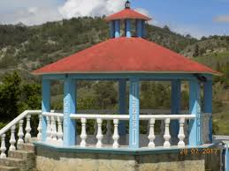

|
|
| principal |     |
Curiosidades de Santa Maria Cuquila Artesanías: En el pueblo se producen diversas artesanías, incluyendo textiles y objetos de barro. Estas creaciones no solo representan la habilidad de los artesanos locales, sino que también son un reflejo de su cultura y tradiciones. Gastronomía Local: La cocina de Santa María Cuquila incluye platillos tradicionales mixtecos como el mole, los tamales y el tasajo (carne seca). Estos alimentos son preparados con recetas que han sido transmitidas de generación en generación. Zonas Arqueológicas: En los alrededores de Santa María Cuquila, hay sitios arqueológicos que muestran vestigios de las antiguas civilizaciones mixtecas. Estos lugares son ideales para quienes están interesados en la historia prehispánica de la región. glesia de Santa María: Este es el corazón del pueblo, una hermosa iglesia construida en estilo colonial que refleja la historia y la cultura de la comunidad. Es un lugar ideal para apreciar la arquitectura y participar en las festividades religiosas. |